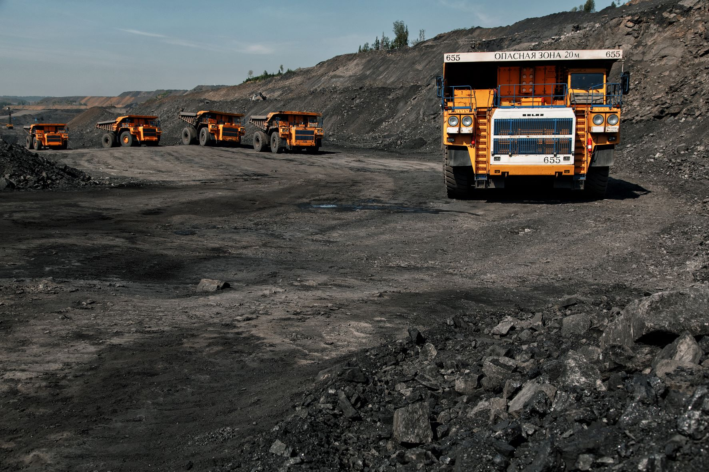

«Мечел» объединяет более 20 промышленных предприятий. Это производители угля, железной руды, стали, проката, ферросплавов, тепловой и электрической энергии.
Все предприятия работают в единой производственной цепочке: от добычи сырья до продукции с высокой добавленной стоимостью.
«Мечел» находится в числе российских лидеров по производству концентрата коксующегося угля.
Компания контролирует более четверти мощностей по обогащению коксующегося угля в стране.
«Мечел» – один из крупнейших российских производителей сортового проката и метизной продукции.
Компания также является наиболее многопрофильным производителем специальных сталей и сплавов в России.
Металлоторговая сеть «Мечела» насчитывает более 80 подразделений, в том числе 18 сервисных центров.
В ее состав входят российская компания «Мечел-Сервис», дочерние компании в странах СНГ, Западной и Восточной Европе.
В состав холдинга также входят три торговых порта, собственные транспортные операторы, сбытовые и сервисные сети.
Продукция «Мечела» реализуется на российском и зарубежных рынках.
О компании
Наша история
19 марта 2003 года в рамках работы по подготовке к IPO зарегистрирована управляющая компания ОАО «Мечел», на баланс которой переведены все производственные активы.
Именно от этой даты ведется официальный отсчет истории «Мечела». Компания стала одним из первых в России холдингов, объединивших активы металлургических и угольных предприятий.
Создание «Мечела» – результат давних партнерских отношений, связывающих активы, вошедшие в холдинг. Кооперация угольного, горнодобывающего, метизного и металлургического
производств позволила компании консолидировать ресурсы и производственные мощности, минимизировать зависимость от внешних поставок сырья и рыночную устойчивость.
Именно это заложило будущий успех «Мечела».
В апреле 2003 года в состав компании вошел металлургический завод «Уральская кузница», расположенный в Челябинской области.
Предприятие является крупнейшим в России производителем штампованных изделий из качественных сталей, жаропрочных и титановых сплавов.
Кооперация «Уральской кузницы» с ЧМК позволила «Мечелу» освоить новые перспективные рынки сбыта продукции.
В июне того же года компания приобретает второй металлургический завод в Румынии в городе Кымпия Турзий.
Он производит широкий спектр металлургической продукции. Позже оба румынских предприятия «Мечела» получили названия по именам городов — «Мечел Тырговиште» и «Мечел Кымпия Турзий».
В сентябре 2003 года в состав «Мечела» вошел Коршуновский горно-обогатительный комбинат. С 1998 года ГОК находился в процедуре банкротства.
В апреле 2002 года производство было остановлено в связи с отказом основного потребителя продукции рассчитываться за получаемое сырье.
Перед комбинатом встали проблемы связанные с отсутствием рынка сбыта продукции, а значит средств к существованию, как у предприятия, так и его многотысячного коллектива.
Это моментально сказалось на социальной обстановке в городе Железногорске-Илимском Иркутской области, так как формирование городского бюджета напрямую зависело от деятельности ГОКа.
Разрешению ситуации помогло заключение договора о стратегическом партнерстве с «Мечелом».
Железорудный концентрат с Коршуновского ГОКа был перенаправлен на Урал, начались инвестиции в производство и социальную сферу. В итоге ГОК заключил мировое соглашение с кредиторами.
Органично вписавшись в состав «Мечела», комбинат получил возможность использовать преимущества совместной работы горнодобывающих и металлургических предприятий; стал уверенно
наращивать темпы производства, начав масштабную программу технического перевооружения.
В октябре команда предприятий «Мечела» пополнилась литовским метизным заводом, названым «Мечел Нямунас».
Завод занимается производством метизной продукции — проволоки, сетки и гвоздей для обеспечения потребностей внутреннего рынка страны.
В составе компании — 7 производственных предприятий.
За 2003 год «Мечел» произвел более 14 млн тонн угля, около 3,5 млн тонн железорудного концентрата, более 2,5 млн тонн кокса, более 5 млн тонн стали, около 430 тыс. тонн метизов, около 13,5 тыс тонн никеля.
Именно от этой даты ведется официальный отсчет истории «Мечела». Компания стала одним из первых в России холдингов, объединивших активы металлургических и угольных предприятий.
Создание «Мечела» – результат давних партнерских отношений, связывающих активы, вошедшие в холдинг. Кооперация угольного, горнодобывающего, метизного и металлургического
производств позволила компании консолидировать ресурсы и производственные мощности, минимизировать зависимость от внешних поставок сырья и рыночную устойчивость.
Именно это заложило будущий успех «Мечела».
В апреле 2003 года в состав компании вошел металлургический завод «Уральская кузница», расположенный в Челябинской области.
Предприятие является крупнейшим в России производителем штампованных изделий из качественных сталей, жаропрочных и титановых сплавов.
Кооперация «Уральской кузницы» с ЧМК позволила «Мечелу» освоить новые перспективные рынки сбыта продукции.
В июне того же года компания приобретает второй металлургический завод в Румынии в городе Кымпия Турзий.
Он производит широкий спектр металлургической продукции. Позже оба румынских предприятия «Мечела» получили названия по именам городов — «Мечел Тырговиште» и «Мечел Кымпия Турзий».
В сентябре 2003 года в состав «Мечела» вошел Коршуновский горно-обогатительный комбинат. С 1998 года ГОК находился в процедуре банкротства.
В апреле 2002 года производство было остановлено в связи с отказом основного потребителя продукции рассчитываться за получаемое сырье.
Перед комбинатом встали проблемы связанные с отсутствием рынка сбыта продукции, а значит средств к существованию, как у предприятия, так и его многотысячного коллектива.
Это моментально сказалось на социальной обстановке в городе Железногорске-Илимском Иркутской области, так как формирование городского бюджета напрямую зависело от деятельности ГОКа.
Разрешению ситуации помогло заключение договора о стратегическом партнерстве с «Мечелом».
Железорудный концентрат с Коршуновского ГОКа был перенаправлен на Урал, начались инвестиции в производство и социальную сферу. В итоге ГОК заключил мировое соглашение с кредиторами.
Органично вписавшись в состав «Мечела», комбинат получил возможность использовать преимущества совместной работы горнодобывающих и металлургических предприятий; стал уверенно
наращивать темпы производства, начав масштабную программу технического перевооружения.
В октябре команда предприятий «Мечела» пополнилась литовским метизным заводом, названым «Мечел Нямунас».
Завод занимается производством метизной продукции — проволоки, сетки и гвоздей для обеспечения потребностей внутреннего рынка страны.
В составе компании — 7 производственных предприятий.
За 2003 год «Мечел» произвел более 14 млн тонн угля, около 3,5 млн тонн железорудного концентрата, более 2,5 млн тонн кокса, более 5 млн тонн стали, около 430 тыс. тонн метизов, около 13,5 тыс тонн никеля.

Структура компании
Группа «Мечел» – вертикально интегрированная компания. ПАО «Мечел» является основным обществом, имеет дочерние и зависимые общества,
которые совместно со своими аффилированными лицами образуют холдинг, совместно именуемый также «Мечел».
Стратегию «Мечела» определяет cовет директоров компании. Предприятия, активы которых консолидированы в группе, работают под оперативным руководством управляющих компаний,
дифференцированных по основным сегментам бизнеса.
Двумя ключевыми из них являются горная добыча, включающая производство угля, железорудного концентрата и кокса, и металлургия,
включающая производство и обработку стали и ее сплавов. Третий сегмент бизнеса «Мечела» – энергетический, предприятия которого занимаются
производством тепловой и электрической энергии.
Управляющая компания горнодобывающего сегмента – «УК Мечел-Майнинг», металлургического – «УК Мечел-Сталь», энергетического – ООО «Мечел-Энерго».
Производственными активами руководят управляющие директора.

которые совместно со своими аффилированными лицами образуют холдинг, совместно именуемый также «Мечел».
Стратегию «Мечела» определяет cовет директоров компании. Предприятия, активы которых консолидированы в группе, работают под оперативным руководством управляющих компаний,
дифференцированных по основным сегментам бизнеса.
Двумя ключевыми из них являются горная добыча, включающая производство угля, железорудного концентрата и кокса, и металлургия,
включающая производство и обработку стали и ее сплавов. Третий сегмент бизнеса «Мечела» – энергетический, предприятия которого занимаются
производством тепловой и электрической энергии.
Управляющая компания горнодобывающего сегмента – «УК Мечел-Майнинг», металлургического – «УК Мечел-Сталь», энергетического – ООО «Мечел-Энерго».
Производственными активами руководят управляющие директора.